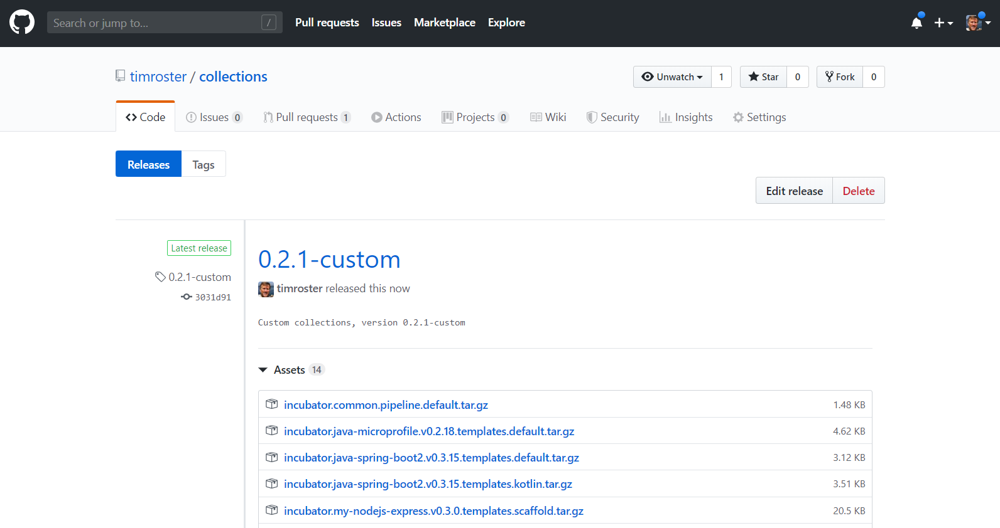

Exercise 9: Deploy an application with a custom Stack, custom Collection, and custom Pipeline¶
In this exercise, we will show how to bring all the custom components (Stacks, Collections, Pipelines) together.
When you have completed this exercise, you will understand how to
- Create a custom pipeline and add it to a collection
- Update the Kabanero Custom Resource to point to a new collection
- Deploy an application based on a custom stack using a custom Tekton pipeline
Prerequisites¶
You should have already carried out the prerequisites defined in Exercise 8.
- Delete the webhook from Exercise 8:
- Open the Tekton dashboard, and select
Webhooks. - Next, click on the box next to the
custom-slack-webhookto select it and click on Delete. -
In the dialog, check the box to delete pipeline runs associated with the webhook and click on Confirm.
-
Delete the task and pipeline from Exercise 8, too.
cd ~/appsody-apps/tekton-tasks oc delete -f test-pipeline.yaml oc delete -f test-task.yaml
Steps¶
1. Add the tasks to the collection¶
In your local collections/incubator/my-nodejs-express/pipelines folder add a new folder called custom-pipeline and add two files test-task.yaml and test-build-deploy-pipeline.yaml. The file structure is seen below
incubator
└── my-nodejs-express/
└── pipelines/
└── custom-pipeline/
└── test-task.yaml
└── test-build-deploy-pipeline.yaml
The test-task.yaml is slightly updated from exercise 8 to pull in the relevant basename from any collection that uses it
#Kabanero! on activate substitute CollectionId for text 'CollectionId'
apiVersion: tekton.dev/v1alpha1
kind: Task
metadata:
name: CollectionId-test-task
spec:
inputs:
resources:
- name: git-source
type: git
outputs:
resources:
- name: docker-image
type: image
steps:
- name: test-echo
image: kabanero/nodejs-express:0.2
workingDir: ${inputs.resources.git-source.path}
command:
- /bin/bash
args:
- -c
- |
set -e
echo "APPSODY_INSTALL:"
echo $APPSODY_INSTALL
echo "APPSODY_TEST:"
echo $APPSODY_TEST
echo "APPSODY_WATCH_DIR:"
echo $APPSODY_WATCH_DIR
echo "------"
echo "My working directory is:"
pwd
ls
echo "------"
echo "I built my first Kabanero based Tekton task"
And the test-build-deploy-pipeline.yaml is a modification of the defauly pipeline:
#Kabanero! on activate substitute CollectionId for text 'CollectionId'
apiVersion: tekton.dev/v1alpha1
kind: Pipeline
metadata:
name: CollectionId-test-build-deploy-pipeline
spec:
resources:
- name: git-source
type: git
- name: docker-image
type: image
tasks:
- name: test-task
taskRef:
name: CollectionId-test-task
resources:
inputs:
- name: git-source
resource: git-source
outputs:
- name: docker-image
resource: docker-image
- name: build-task
taskRef:
name: CollectionId-build-task
runAfter: [test-task]
resources:
inputs:
- name: git-source
resource: git-source
outputs:
- name: docker-image
resource: docker-image
- name: deploy-task
taskRef:
name: CollectionId-deploy-task
runAfter: [build-task]
resources:
inputs:
- name: git-source
resource: git-source
- name: docker-image
resource: docker-image
In incubator/my-nodejs-express update collection.yaml to change the default pipeline
default-image: my-nodejs-express
default-pipeline: my-nodejs-express-test-build-deploy-pipeline
images:
- id: my-nodejs-express
image: $IMAGE_REGISTRY_ORG/my-nodejs-express:0.3
Unusually in these exercises, we have been using a version of appsody that is ahead of the current level baked into some the standard kabanero tekton artifacts, so there is one additional change that is needed to get around this. You need to update a tag in the common build-task.yaml used for all stacks in the collection. This update will select a builder container that uses appsody 0.5.3 to support the private registry semantics used in these exercises.
Open the incubator/common/pipelines/default/build-task.yaml file and add the tag :0.5.3-buildah1.9.0 to the image spec in the assemble-extract step as shown:
#Kabanero! on activate substitute CollectionId for text 'CollectionId'
apiVersion: tekton.dev/v1alpha1
kind: Task
metadata:
name: CollectionId-build-task
spec:
inputs:
resources:
- name: git-source
type: git
params:
- name: pathToDockerFile
default: /workspace/extracted/Dockerfile
- name: pathToContext
default: /workspace/extracted
outputs:
resources:
- name: docker-image
type: image
steps:
- name: assemble-extract
securityContext:
privileged: true
image: appsody/appsody-buildah:0.5.3-buildah1.9.0
command: ["/bin/bash"]
args:
- -c
- "/extract.sh"
env:
- name: gitsource
value: git-source
volumeMounts:
- mountPath: /var/lib/containers
name: varlibcontainers
...
2. Re-run the scripts¶
Run build.sh and release.sh as before. From collections home run:
IMAGE_REGISTRY_ORG=$IMAGE_REGISTRY/$IMAGE_REGISTRY_ORG ./ci/build.sh
IMAGE_REGISTRY="" IMAGE_REGISTRY_PASSWORD="" ./ci/release.sh
Check the ci/release/ folder to make sure there is a file called (your version may be different):
incubator.my-nodejs-express.v0.3.0.pipeline.custom-pipeline.tar.gz
And that the generated ci/release/kabanero-index.yaml has a section like the following:
- default-image: my-nodejs-express
...
pipelines:
- id: custom-pipeline
sha256: e3c3050850bf88b97c8fba728592d0cf671bb9d27b582ebaa9f90d939bfa60a5
url: https://github.com/stevemar/collections/releases/download/0.2.1-custom/incubator.my-nodejs-express.v0.3.0.pipeline.custom-pipeline.tar.gz
3. Update the current release¶
Upload the changes
# Add your custom stack changes
git add -A
# Create a commit message
git commit -m "Add custom task and pipeline"
# Push the changes to your repository. For example:
git push -u my-org
Navigating back to your GitHub repo, select the current custom release:

Clicking on the release name (0.2.1-custom) will allow you to edit the release. Click on Edit tag. Click on the x to delete existing items from the release and then upload all the files in collections/ci/release/ which were generated from the previous steps, by clicking on the Attach binaries... box.
4. Update the Kabanero Custom Resource¶
Use oc get kabaneros -n kabanero to obtain a list of all Kabanero CR instances in namespace kabanero. The default name for the CR instance is kabanero.
oc get kabaneros -n kabanero
You should see output similar to the following:
$ oc get kabaneros -n kabanero
NAME AGE VERSION READY
kabanero 17d 0.1.0 True
Edit the specific CR instance using oc edit kabaneros <name> -n kabanero, replacing <name> with the instance name.
oc edit kabaneros kabanero -n kabanero
Modify your Kabanero custom resource (CR) instance to target the new collections that were pushed to the remote Github repository. The Spec.Collections.Repositories.url attribute should be set to the URL of the collection repository.
apiVersion: kabanero.io/v1alpha1
kind: Kabanero
metadata:
name: kabanero
namespace: kabanero
spec:
collections:
repositories:
- name: custom
url: https://github.com/<username>/collections/releases/download/0.2.1-custom/kabanero-index.yaml
activateDefaultCollections: true
When you are done editing, save your changes and exit the editor. The updated Kabanero CR instance will be applied to your cluster.
5. Test it all out¶
If you go to the tekton dashboard, you should see the new pipeline and task (it was added when updating the Kabanero CR by the Kabanero Operator)
Re-add the webhook, this time you should see the new pipeline as an option (without having to do kubectl apply). Use similar settings for the webhook as in Exercise 8:
Name: custom-stack-webhook
Repository URL: http://github.com/{username}/test-custom-stack
Access Token: github-tekton
Namespace: kabanero
Pipeline: my-nodejs-express-test-build-deploy-pipeline
Service account: kabanero-operator
Docker Registry: docker-registry.default.svc:5000/kabanero
When the pipeline runs, it should, in addition to running the new test task, also run the build and deploy task. You can test this by making a minor update to your test-custom-stack repo. Once you have done this then re-commit to trigger the webhook by:
git add -u
git commit -m "Minor update to test pipeline"
git push -u my-org
Return to the Tekton Pipeline Runs tab to check on the status of your deployment.
After a while it should show that the pipeline run is complete.
You can also click on the specific pipeline run link (custom-stack-1576283066 in the above example), and see the progress of the three tasks which make up the new pipeline. Once they are all complete, it should look similar to the picture below. Notice how you can click on a given task (e.g. the new test-task we created) to see the output.
Although the task we added was a test task, you can imagine how you might add additional tasks that are more relevant to your enterprise environment - for example to check that the application code added by the developer meets your security standards.
Once the pipeline run is complete, you can confirm that our test application, with the upgraded stack, is now running with a curl -v to the route. You should see helmet responses, e.g.:
$ curl -v http://test-custom-stack-kabanero.timro-roks1-5290c8c8e5797924dc1ad5d1b85b37c0-0001.us-east.containers.appdom
ain.cloud/
* Trying 169.62.48.20...
* TCP_NODELAY set
* Connected to test-custom-stack-kabanero.timro-roks1-5290c8c8e5797924dc1ad5d1b85b37c0-0001.us-east.containers.appdomain.cloud (169.62.48.20) port 80 (#0)
> GET / HTTP/1.1
> Host: test-custom-stack-kabanero.timro-roks1-5290c8c8e5797924dc1ad5d1b85b37c0-0001.us-east.containers.appdomain.cloud
> User-Agent: curl/7.63.0
> Accept: */*
>
< HTTP/1.1 200 OK
< X-DNS-Prefetch-Control: off
< X-Frame-Options: SAMEORIGIN
< Strict-Transport-Security: max-age=15552000; includeSubDomains
< X-Download-Options: noopen
< X-Content-Type-Options: nosniff
< X-XSS-Protection: 1; mode=block
< X-Powered-By: Express
< Content-Type: text/html; charset=utf-8
< Content-Length: 34
< ETag: W/"22-E8hT/HhjJRx/5AG3TOq9TBd5R7g"
< Date: Sat, 14 Dec 2019 00:40:30 GMT
< Set-Cookie: e23eec15db4cc24793d795555bb55650=b8749458e2714fe3be1767f782a35058; path=/; HttpOnly
< Cache-control: private
<
Hello from a Custom Appsody Stack!* Connection #0 to host test-custom-stack-kabanero.timro-roks1-5290c8c8e5797924dc1ad5d1b85b37c0-0001.us-east.containers.appdomain.cloud left intact
Congratulations!! You have completed Day 2 of the workshop! You have successfully created a custom appsody stack, included it in a custom Collection that also includes a custom pipeline - showing how you can adapt the standard kabanero infrastructure to suit the needs of your enterprise.